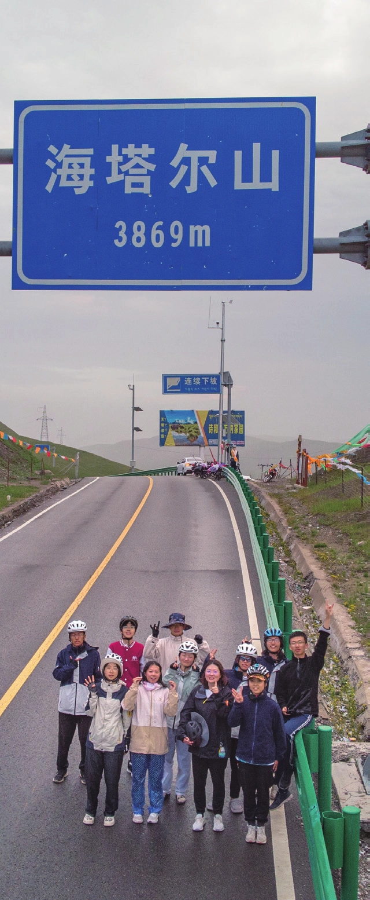
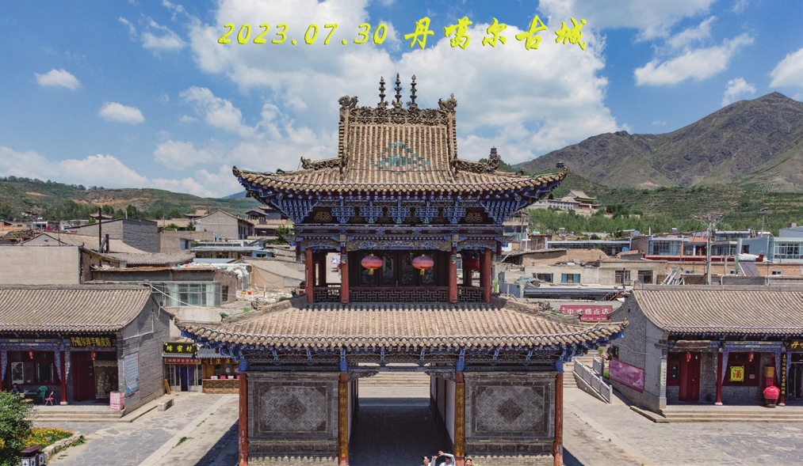
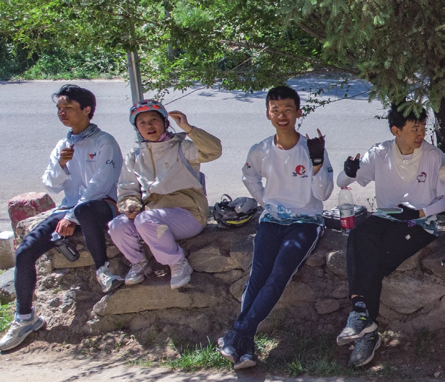
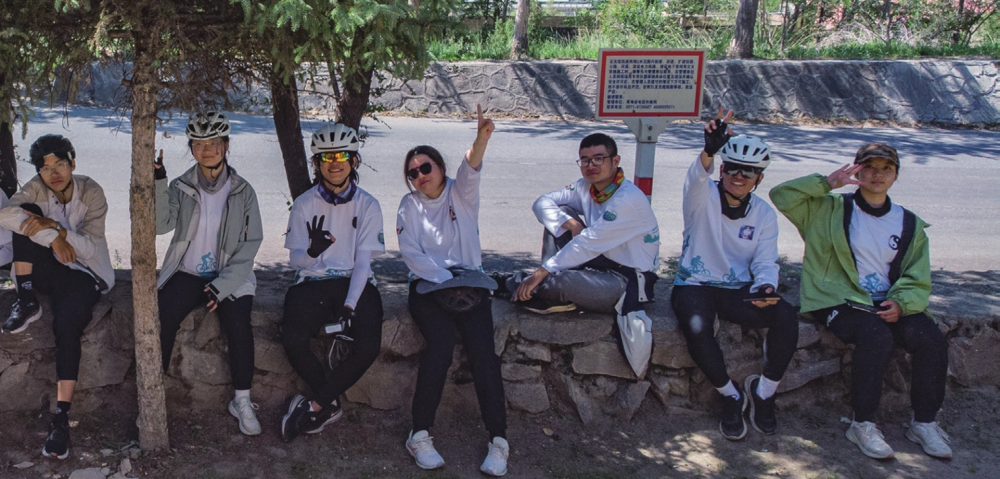

不为谁而作的歌
原刊19
在暑期结束的许久之后，没来由地再度上 b 站看了暑期视频，一遍又一遍，之前不知是出于何种缘由或是心情，甚至没有静下心来很完整地看过一遍。在那天悄悄地发了一个状态，“好像总是慢半拍，延迟性地看着暑期视频，延迟性地忽然有点想要落泪。”那夜循环了暑期视频的bgm《山春》一遍又一遍。
为什么来到车协，又为什么在这里停留了这么久，又为什么不知不觉地来了暑期，又是怎样冲动地来了冬游。这是我开始提笔之时对自己的一些叩问。有一些可解释的理由，但答案是什么或许已经不重要了。
前段时间看到过一段文字：“中国文人的心头有三个胎记：乌托邦、武侠和情爱。或者称之为：桃花源、桃花岛、桃花扇。”车协便是我的桃花源与桃花岛。它是一个与日常生活差异巨大的环境，在“车协”的氛围之中，人与人之间的距离在这个语境之下会下意识地被拉近。晚训和约饭，暑期团众之间兄弟姐妹的称呼，师父与师门的羁绊，这些都蕴含着一种像是武侠小说中才会有的江湖气息。


来到这里，最初的原因就是，我在渴望爱。我羡慕着车协之中的爱。是 22 年春加入的车协，在高频率参加车协拉练之前已经在这儿躺尸躺了一年，之前所渴慕的一切，都不曾属于我。可能由于本身的性格原因，我一直习惯于将自己抽离于人际网络之外，作为一个旁观者的角色存在于一个集体之中。但他播散出来的温暖，对游离在圈外的我来说依旧有相当的诱惑力，就这么看着，便已足够。
23 年春，课程进入临床实习阶段，实习的医院恰好离本部很近，此时动了重入车协的念。在车协并没有相识的人，但我还是来了，算是予自己的青春一场恣意的狂欢。这是只为我的青春而做的歌——当然此时尚是序曲。
因为想多参加一些活动，又不想做一个无用之人，且觉得押后很酷，面对着机械是一件非常有序且富有逻辑的事情，所以动了拜师的念头，并在拉我入协的友人的鼓励之下开始私戳师父们，试图拜师。由于师父们的个人安排与收徒名额限制，好几位师父都暂时没有收徒的打算，打算再戳一位，如果再被拒的话就放弃拜师。最终是偶然，也是幸运地加入了峰师门。后来聊起时师父说，他并不擅长拒绝别人，而且看我的态度非常真诚。
加入峰师门，算是我入协以来最为幸运的一件事。此间种种不过多赘述，但持续到凌晨的修车局，鬼笑石的夜骑与日出，迷茫时的夜聊，接站时的奶茶，疲惫时的安慰与拥抱都将成为我永恒的记忆。


起初并没有去暑期的打算，只是想待自己宽容，给自己的青春留下一抹恣意的剪影。但随着参加的晚训和拉练越来越多，与车协及骑行这项运动产生的联结愈发紧密。越来越频繁地被问及是否想过春训，是否想去暑期。态度由一开始的坚决拒绝，到后来的犹豫不定，最后在某日睡梦初醒，意识尚有些模糊时提交了报名表，但这或许就是我的潜意识替我作出的决定吧。
“还要找个天真的时刻，把所有精雕细琢的成品抛空。还要得意忘形、莫名其妙、胡言乱语、废话连篇。”
现在回顾起暑期，它于我而言，便是这样的一个天真的时刻。
对暑期原本并没有很多的期待，“是十三个人共同骑行生活约一个月。”算是对暑期的简要概括，也算是我对暑期最开始的认知和期待。是一场共同骑行生活的旅程，仅此而已。但这么介绍，总有一些内心的颤抖与不甘。


暑期是我的意外之喜。本以为它于我而言会只是一段稍微特别一点的小小插曲，却在回想时，纷乱的回忆复杂的情绪一齐涌上心头。
记得暑期第一日的酷暑、纷乱、低迷，六哥的午饭食宿双前站，一马当先顶上前去当午饭前站的小妹，首日七扎的无语和略带嘲讽的欢快，小妹的发烧和团儿的黑脸。在首日问题出现后的迅速磨合。记得第二日的界碑、高粱地、风雨和出生五哥带到了二十多的缓上。记得第三日作为押后助理但很矬的我、稳定发挥疯狂扎胎的五哥、队医放坡扎胎后的反爬、半日几乎骑成单日、在休息点疯狂的补胎、十哥查阅资料后将扎胎的霉运引到自己身上的符纸（刚贴上那辆车就扎了）。在那天印象最深的还是很矬的五哥，推着更矬的我，并对我说当时他白河的时候就是被团儿这样一路推上去的，团儿对他说不用谢，在之后有能力的时候也帮助一下周围的人就可以……
我清晰地记得暑期的每一天。记得在路上六见到羊群和西瓜的拟声乱叫，和大家在一起的胡说八道，坡顶的白云微风与柳荫，江西沟和石乃亥的月亮，在院子里和草原上的夜聊，不知名的紫色小花构成的花海，刚察山坡草地上的团会和煨桑升起的袅袅烟雾，一一、六、五哥带着社恐的我前往牧民家中和各个机构进行访谈、海塔尔垭口暴雨初歇、普照大地的落日余晖，并且翻找到了那日翻越海塔尔垭口，夜路放坡时小妹的朋友圈：
“刚察—默勒，队医视角从后往前看，可以看到一一改造过的 UFO 头盔/可以看到二姐的荷绿色会服和凉鞋/可以看到团儿扎着可爱的辫子，趴上了休息把/可以看到四姐戴着帽檐被压扁米白色的帽子，看起来像垂耳兔/可以看到五哥没有冲锋衣外壳的会服抓绒/可以看到六哥PKUHSC 的红色棒球服和发带/可以看到七七的芋圆小背包和独一无二的靓仔头盔/可以看到八哥乡村雨衣下的紧身骑行裤/可以看到啾啾蓝色头盔下飘逸的头发/可以看到十的超长燕把和富有节奏的踩踏/可以看到小哥的鬼子帽和挡泥板上的反光条/可以看到小弟没有踢起来的脚支/看到雨路变雾路变夜路希望前方就到站又希望/这是一条没有尽头的路。”
还记得大冬树山垭口的暴雨、碎石、弯路、三十公里的长放坡与路边的云杉，记得某骑行日收队点团儿爬上路边草坡，却在下来时没刹住一脚踩进下水道井盖间隙，队医开箱的滑稽和可爱。记得在我和一一离队时的蛋糕与大家一起合唱的送别，记得在火车站大家挥手告别时的不舍，记得在民乐到张掖路上十哥被撞弯的舵管、路遇的外国单人骑行者、和七七的聊天。还记得在我们走之后，张掖到清水的那日，合唱时不会唱送别的六哼了一路的送别。


我永远留恋一一温暖的笑容，豁达温和的宽慰；团儿的小辫子，永远也抹不匀的防晒霜，午饭点的龙吸水和自创的押队医职务，对了还有看起来很不值钱的笑容；四姐的叫人傻狗、出生的独特关怀方式与每次见队伍里有人咳嗽便急切地上前去问当事人“死了没”的关切，以及虽然自己体力不是特别好，每次仍尽量不让团众承担更多负累的坚持；五哥的“尽力了，问心无愧”“我来宣布个事儿”“发生甚么事了”等经典语录与遇事时的担当；六的胡言乱语和靠谱负责；七七的细腻与丰富情感与真诚；八哥的刚毅正直与包容善良；啾啾的澄澈和纯净；十哥的细致可靠与可爱；小哥的天马行空的思想与对生活怀有的好奇；小弟的闷骚毒舌和细腻；小妹每次团会上的“活”与和别人相处时生怕亏欠了别人的小心翼翼。
每一天，每一个人，我都清楚地记得。
抱着骑完就好的心态来到了这里，但暑期给我的着实太多。我很爱团里的每一个人，在这里我也感到自己是值得被爱的。
之前很喜欢进行一些考古，见到了很多不同的人对于车协的不同的理解。其中有一个是这样的：
“最后，说一点个人感慨。待的久了，我越来越感受到会员身上浓厚的感性气息，仿佛大家对情感的需求逐渐演变成为主要诉求。来到这里不是骑车，而是寻求爱，各种关爱……只想提一点，自行车协会的核心是自行车。所有忽视自行车大谈人情都是扯淡。”
最初加入车协，确实是因为爱。被它吸引，起初也是因为他的温情。但这并不妨碍我逐渐发现我很喜欢骑行这一方式——汽车对我来说太快，而步行于我而言又太慢，自行车的速度，对我来说刚好。在一圈一圈地踩下脚踏后，车轮亲吻着大地，逐步向前。对车协的理解有很多很多，车协很奇妙的一点或许在于，在这里，你总能找到一个适合自己的方式或位置。
但现在我想，即使离开了协会，我也会依然热爱骑行。即使脱离了现今的环境，我也依然拥有去爱的能力，并且可以坚定地相信自己是值得被爱的。
起初车协算是我为自己营造的青春乌托邦，可以让我可以得到片刻的喘歇。现在即使离开车协，我也能很好地生活，但总想再回馈点什么，总想做些什么来维护这个对很多人有着独特意义或是即将成为对于一些人来说有着独特意义的地方。我不知道自己是否还会留在这里，但我想这或许是很多老会员选择留在这里的原因吧。